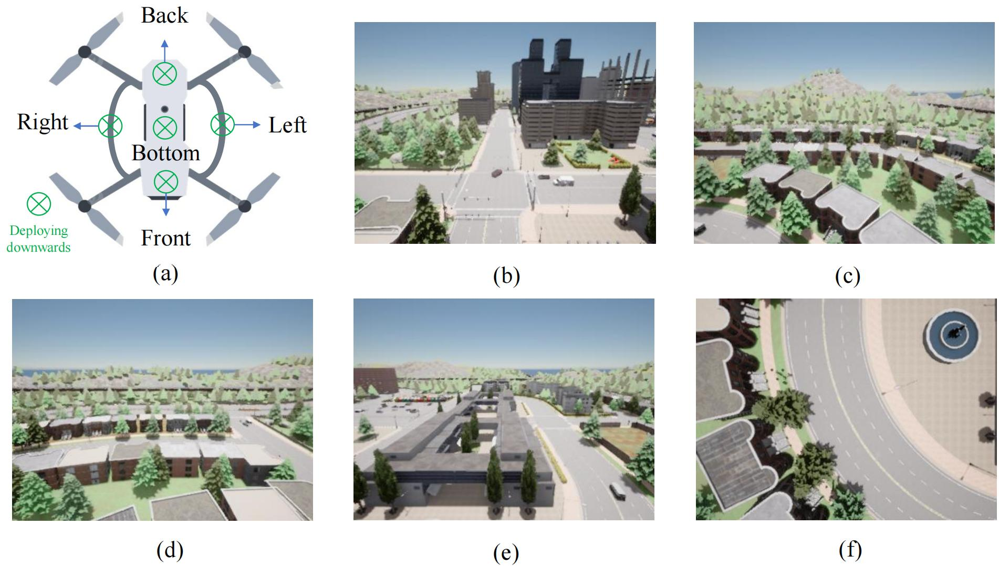

Smart City Facilitates LAE
Smart City Facilitates LAE
- Ground resources can be utilized to facilitate the LAE operations.
- Ground guiding and control system design for air flight.
- SC design for LAE development.
LAE Offers Over-the-Air Advantage
LAE Offers the Over-the-Air Advantage and Opportunity for SC Operations
- OTA mobile things (UAVs) enrich the air relay opportunity.
- OTA delivery of multi-dimensional resources upon request.
- Help ground traffic control.
- Enrich SC's service dimension: transport people and needs for smart mobility.
Recent Projects
Multi-View UAV Dataset

A comprehensive multi-view UAV dataset for visual navigation research in GPS-denied urban environments, collected using the CARLA simulator.
This dataset supports research on visual navigation for unmanned aerial vehicles (UAVs) in GPS-denied urban environments. It features multi-directional camera views collected from simulated UAV flights across diverse urban landscapes, making it ideal for developing localization and navigation algorithms that rely on visual cues rather than GPS signals. Hugging Face